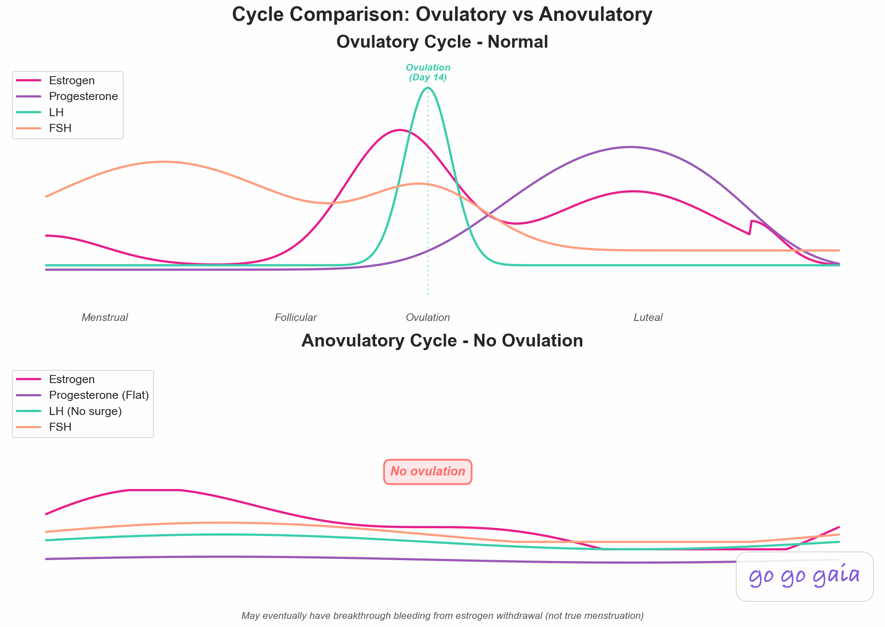

Best Period Tracker for Irregular Cycles (2026)
Your app says your period starts Tuesday. It shows up two weeks later, or two weeks early. If that keeps happening, the app isn't broken. It was built for regular cycles. This guide compares 6 apps on what actually matters when your cycle varies: how they handle wide swings in cycle length, whether you can see your real history instead of a single guessed date, and how well they track symptoms without depending on a predictable calendar.
Quick Answer: Best Period Tracker for Irregular Cycles?
No prediction algorithm handles a genuinely irregular cycle well, so the best app is the one that gives you useful history instead of confident guesses. Here's the short version by use case:
- For science-first tracking: Clue. Publishes how its predictions work and adapts to variable cycles better than most
- For content and community: Flo. Huge article library and user base, though predictions lean on averages
- For temperature-based ovulation detection: Natural Cycles. Measures what your body did instead of doing calendar math
- For simple calendar-style tracking: Stardust. Popular, easy to use, predictions still assume regularity
- For free and built-in: Apple Health Cycle Tracking. No download, no cost, and it can flag possible cycle deviations
- For symptom and pattern history: Go Go Gaia. Logs symptoms, mood, sleep, and custom habits with correlation insights that don't depend on a regular calendar

Search for a period tracker for irregular cycles and you'll find list after list ranking apps by prediction accuracy. That's backwards. When your cycle is 26 days one month and 41 the next, prediction accuracy is exactly the thing no app can deliver.
So this guide judges each irregular period tracker app on a different standard: does it show you what's actually happening, or does it just keep guessing at a date and missing?
Full Transparency
This guide is published by Holland Neurotech Inc., the company behind Go Go Gaia. We've compared each app based on its publicly documented features, pricing, privacy practices, and recent user reviews. Every app here has real strengths, and the best one for you depends on your specific situation.
Our goal is to help you make an informed decision, whether that leads you to Go Go Gaia or another app that better fits your needs.
Medical Disclaimer
This article is for educational and informational purposes only and does not constitute medical advice. The information provided is based on general wellness principles and should not replace consultation with qualified healthcare professionals. Always consult your doctor, gynecologist, or healthcare provider about changes in your cycle, especially if you have underlying health conditions, irregular cycles, PCOS, thyroid conditions, or other medical concerns. Nothing in this article is contraception advice. No app comparison can tell you what to use for birth control, and that decision belongs with you and your doctor. Individual results may vary, and what works for one person may not work for another.
Why Predictions Miss When Your Cycle Varies
Most period trackers predict your next period by averaging your past cycle lengths. That math works when your cycles are similar month to month, and it falls apart when they aren't. With irregular cycles, the prediction lands in the statistical middle and misses in both directions.
The textbook 28-day cycle that prediction algorithms assume is less common than you'd think. An analysis of over 600,000 cycles found that only around 13% of people had an average cycle length of exactly 28 days[1]. And an average hides the swings. Someone whose cycles run 24, 38, 29, and 45 days averages out to 34, a number their period may never actually hit.
There's a second problem. Calendar math assumes you ovulate on a predictable schedule. Irregular cycles often involve ovulation happening late, early, or not at all in a given cycle. When ovulation doesn't happen, the usual hormone pattern never arrives, and no calendar can account for that.

This is why period tracker accuracy drops sharply when cycles vary a lot. The same calendar-based approach that works fine for regular cycles misses far more often for genuinely irregular ones. The fix isn't a smarter prediction. It's shifting what you ask the app to do.
What Makes an Irregular Period Tracker Actually Useful?
A useful irregular period tracker does three things: it keeps working when your cycle length swings widely, it shows you raw history and ranges instead of one confident predicted date, and it tracks symptoms and body signals that don't depend on a regular calendar. Predictions are a bonus, not the point.
It Handles Wide Cycle Variability
Some apps quietly assume your data is wrong when a cycle runs long. Others adapt. You want an app that accepts a 45-day cycle as data, not as an error, and keeps logging without nagging you about a "late" period that isn't late for your body.
It Shows History and Ranges, Not Just One Date
With irregular cycles, "your period will start June 18" is a guess dressed up as a fact. A cycle history screen that shows your last six cycle lengths side by side tells you something true: your real range, your shortest and longest cycles, and whether things are shifting over time.
It Tracks Symptoms and Signals Independent of the Calendar
Cramps, spotting, mood shifts, sleep changes, and temperature patterns happen whether or not your cycle is predictable. An app that logs these well builds a record that's useful on day 24 or day 54. That record is also what helps a doctor, because it shows what happened rather than what an algorithm expected.
How We Compared These Apps
We compared each app using its App Store listing, published pricing, privacy policy, publicly documented features, and recent user reviews, all checked in June 2026. We focused on how each app behaves when cycles vary, not on overall feature counts.
One more thing you should know: we make Go Go Gaia. We included it because we think it's a strong option for this use case, and we've listed its real limitations the same way we did for every other app. This comparison wasn't reviewed by clinicians, and it isn't medical guidance.
The 6 Apps Compared
Each app here earns its place for a different reason. Clue adapts to variability better than most mainstream trackers, Natural Cycles skips calendar math entirely, Apple Health is free and already on your phone, and the others each fit a specific kind of user. Here's the honest breakdown.
For Science-First Tracking: Clue
Best if you want: An established, evidence-based tracker that's open about how its predictions work and genuinely accounts for cycle variability.
Key Features
- Cycle tracking with predictions that adapt to your logged history
- Symptom tracking across 30+ categories, plus custom tags
- Cycle analysis screens that show your cycle length history
- Published, plain-language explanations of its prediction approach
- GDPR-compliant (Berlin-based, EU privacy standards)
Strengths
- Handles irregularity better than most mainstream trackers. It openly tells users that predictions are estimates and shows your actual cycle variation
- Ranked as a top tracking app in a 2016 review in the journal Obstetrics & Gynecology
- Strong privacy record, with an explicit commitment not to share data with US authorities
- Cross-platform (iOS and Android)
Limitations
- Predictions still lean on past cycle lengths, so they stay rough when your cycles vary a lot
- No nutrition, habit, or lab tracking
- Free users see regular prompts to upgrade to Clue Plus
- Wearable support is limited to basic Apple Health syncing
Who Should Choose This
- You want the most established science-first tracker
- Privacy is near the top of your list
- You need Android support
Pricing
Free (with upgrade prompts), Clue Plus ~$39.99/year. Available on iOS and Android.
For Content and Community: Flo
Best if you want: The largest period tracking community, with a deep library of articles about cycle health.
Key Features
- Cycle tracking with AI-assisted predictions
- Thousands of articles reviewed by medical professionals
- Symptom logging with daily insights
- Large community with discussion threads on irregular cycles
Strengths
- The biggest user base of any period tracker, with 420M+ downloads
- Genuinely strong educational content, including articles on irregular cycles and their causes
- Cross-platform (iOS and Android)
Limitations
- Predictions, even AI-assisted ones, are built on your past cycle data, so they struggle when cycles vary widely and still present a single expected date
- Much of the educational content sits behind the Premium paywall
- Privacy history worth knowing: an FTC settlement in 2021 over sharing health data with Facebook and Google, and a 2025 class action (covering data sharing between 2016 and 2019) in which Flo agreed to pay about $8 million and Google about $48 million into the settlement fund, while Meta was found liable separately by a jury. Flo has since added Anonymous Mode
- No custom habit tracking or lab tracking
Who Should Choose This
- You want articles and community alongside logging
- You like a guided, content-rich experience
- You're comfortable with Flo's data practices or plan to use Anonymous Mode
Pricing
Free (limited features + ads), Flo Premium ~$39.99/year. Available on iOS and Android.
For Temperature-Based Ovulation Detection: Natural Cycles
Best if you want: An app that detects ovulation from your body temperature instead of estimating it from calendar math. That's a genuinely different approach, and it matters for irregular cycles.
Key Features
- Daily basal body temperature analysis to detect when ovulation actually happened
- Works with a basal thermometer, Oura Ring, or Apple Watch temperature data
- Cycle statistics that show your real variation over time
Strengths
- Doesn't assume a regular cycle. It reads temperature shifts, so it can confirm ovulation even when your cycle length keeps changing
- Useful for understanding whether and when you're ovulating, which is often the central question with irregular cycles
- One regulatory fact worth stating plainly: Natural Cycles is FDA cleared to be marketed as birth control in the US. We're noting that as a fact about the product, not a recommendation. Contraception decisions belong with you and your doctor
Limitations
- Subscription only, with no free tier
- Depends on consistent temperature data, so it works best with a wearable or a steady morning measurement routine
- Focused on cycle and fertility status. Limited symptom, mood, and lifestyle tracking compared to the other apps here
Who Should Choose This
- You specifically want temperature-confirmed ovulation data
- You already wear an Oura Ring or Apple Watch, or don't mind a morning thermometer
- Your main question is "am I ovulating, and when?"
Pricing
~$119.99/year or ~$14.99/month (annual plans include a basal thermometer). Available on iOS and Android.
For Simple Calendar-Style Tracking: Stardust
Best if you want: A low-effort, visually distinctive tracker that's popular with younger users and easy to stick with.
Key Features
- Calendar-style period and cycle tracking
- Hormone-themed daily summaries tied to your cycle phase
- Option to link with friends and see each other's cycle phases
- Simple symptom and mood logging
Strengths
- One of the most popular period trackers among Gen Z, with a distinctive look that makes daily logging feel less like a chore
- The social feature is unique among the apps here, and some users say it's what keeps them logging
- Cross-platform (iOS and Android)
Limitations
- Predictions are calendar-style and assume regularity, so they have the same blind spots as any averaging approach when cycles vary
- Phase-based daily summaries assume a typical cycle structure, which fits less well if you ovulate late or skip cycles
- Privacy questions were raised in 2022 reporting about data-sharing language in its policy. The company has since revised its privacy policy
Who Should Choose This
- You want tracking to feel light and fun, not clinical
- Your cycles are mildly variable rather than wildly unpredictable
- Your friends already use it and that helps you stay consistent
Pricing
Free, with an optional premium subscription. Available on iOS and Android.
For Free, Native Logging: Apple Health Cycle Tracking
Best if you want: A no-cost, no-download option that's already on your iPhone and quietly does a few things well for irregular cycles.
Key Features
- Period, spotting, and symptom logging built into the Health app
- Cycle history view showing your logged cycle lengths
- Cycle deviation notifications that can flag patterns like irregular cycles, infrequent periods, prolonged periods, or persistent spotting
- Wrist temperature data from Apple Watch (Series 8 and later) for retrospective ovulation estimates
Strengths
- Completely free with no account, ads, or upsells
- The cycle deviation notifications are a real feature for irregular cycles. The app tells you when your logged history shows a pattern worth discussing with a doctor
- Strong privacy posture, with health data encrypted and processed on-device
Limitations
- Symptom list is fixed, with no custom symptoms or habits
- No correlation insights. It stores your data but doesn't connect symptoms to sleep, stress, or anything else
- Exporting your history in a doctor-friendly format is clunky
- iPhone only, and the temperature features need a recent Apple Watch
Who Should Choose This
- You want zero cost and zero setup
- You mainly need a reliable record of dates and basic symptoms
- You wear an Apple Watch and want passive temperature data
Pricing
Free. Built into iOS, in the Apple Health app.
For Symptom and Pattern History: Go Go Gaia
Best if you want: A tracker built around what's actually happening rather than what a calendar predicts. It logs symptoms, mood, sleep, and custom habits, then shows how they connect, and none of that depends on your cycle being regular.
Key Features
- Symptom, mood, sleep, and custom habit logging that works the same on day 24 or day 54 of a cycle
- Correlation insights drawn from your own data, like "cramps are worse on days after poor sleep"
- Health Clues: save a personal hypothesis ("stress delays my period") and the app checks it against your logged data over time
- Wearable data through Apple Health (Apple Watch, Oura, Garmin, WHOOP), so sleep, HRV, and temperature flow in automatically
- Lab tracking for values like TSH and progesterone
- Doctor-ready data export
Strengths
- History-first by design. Long, short, and skipped cycles are treated as data, not errors
- The correlation engine works from whatever you log, so insights keep coming even when predictions wouldn't make sense
- Tracks cycle, symptoms, mood, sleep, fitness, and labs in one app, which keeps your whole history in one place
- No ads, no data selling
Limitations
- iOS only, with no Android version yet
- Newer app with a smaller community, so there are no in-app discussion forums
- Some advanced features, including the full AI assistant, require premium
- Passive features rely on Apple Health, so they're lighter without a wearable
Who Should Choose This
- You've given up on predictions and want to understand your patterns instead
- You're building a symptom history to bring to a doctor
- You wear a watch or ring and want that data connected to your logs
Pricing
Free (most features), Premium ~$12/month for full AI insights and advanced correlations. Available on the iOS App Store.
Feature Comparison Table
Here's how the 6 apps stack up on the things that matter most when your cycle varies. ✅ means full support, ⚠️ means partial or limited, 🔒 means premium only, and ❌ means not available.
| Feature | Clue | Flo | Natural Cycles | Stardust | Apple Health | Go Go Gaia |
|---|---|---|---|---|---|---|
| Handles Variable Cycle Lengths | ✅ Adapts to your data | ⚠️ Built on past cycles | ✅ Measures, doesn't assume | ⚠️ Calendar-based | ✅ Logs whatever happens | ✅ History-first |
| Shows History / Ranges vs Single Date | ✅ Cycle analysis view | ⚠️ Single predicted date | ✅ Confirms after the fact | ⚠️ Single predicted date | ✅ Cycle length history | ✅ History view |
| Symptom History Charts | ✅ 30+ categories | ⚠️ Insights mostly 🔒 | ⚠️ Basic | ⚠️ Basic | ⚠️ List-style log | ✅ Charts + correlations |
| Temperature / Wearable Input | ⚠️ Basic Apple Health | ⚠️ Basic | ✅ Core feature | ❌ | ✅ Watch wrist temp | ✅ Via Apple Health |
| Custom Symptoms / Habits | ✅ Custom tags | ⚠️ Preset list | ⚠️ Preset list | ⚠️ Preset list | ❌ Fixed list | ✅ Custom both |
| Explains How Predictions Work | ✅ Published approach | ⚠️ General info | ✅ Published research | ⚠️ Limited | ⚠️ Documented basics | ⚠️ History-first focus |
| Flags Possible Cycle Deviations | ⚠️ In cycle analysis | ⚠️ In reports, some 🔒 | ❌ | ❌ | ✅ Notifications | ⚠️ In insights |
| Data Export for Your Doctor | ⚠️ Limited | ⚠️ Limited | ⚠️ On request | ⚠️ Limited | ⚠️ Raw export only | ✅ Doctor-ready |
| Price | Free + ~$39.99/yr | Free + ~$39.99/yr | ~$119.99/yr only | Free + premium | Free | Free + ~$12/mo |
| Platform | iOS + Android | iOS + Android | iOS + Android | iOS + Android | iOS only | iOS only |
| Privacy | ✅ GDPR, Berlin-based | ⚠️ FTC 2021, Anon Mode added | ✅ GDPR, Sweden-based | ⚠️ 2022 reporting, since revised | ✅ On-device encryption | ✅ No ads, no data selling |
When Another App Is the Better Choice
No single app wins this category, and pretending otherwise wouldn't help you. Here's when each alternative is genuinely the right call, including over Go Go Gaia.
- Choose Natural Cycles if your core question is whether and when you ovulate. Temperature-confirmed ovulation detection is something the calendar-based apps can't replicate, and it's the most direct answer to that question.
- Choose Clue if you want the most established science-first tracker, you're on Android, or you value an app that's transparent about how its predictions work and honest about their limits.
- Choose Apple Health if you want free, native, and zero setup. For a simple dated record plus deviation notifications, it's hard to argue with something already on your phone.
- Choose Flo if reading and community matter as much to you as logging. Its article library on cycle health is genuinely deep.
- Choose Stardust if a light, social experience is what will actually keep you logging. Consistency beats features you won't use.
Go Go Gaia fits best when your goal is a detailed symptom and pattern history, especially one you plan to bring to a doctor. If you mainly want a date on a calendar, one of the others will feel simpler.
Common Causes of Irregular Cycles
Irregular cycles can have many causes, and an app can't tell you which one is yours. A doctor can. What an app can do is document the pattern, which is exactly what makes that appointment more useful. Here's the context, with deeper guides where we have them.
- PCOS. One of the most common causes of irregular or missing periods. If this is your situation, our PCOS tracking app comparison goes deeper on condition-specific features like lab and metabolic tracking.
- Perimenopause. Cycles often become less predictable in the years before menopause. Our perimenopause app comparison covers trackers built for that stage.
- Thyroid conditions. Thyroid hormones interact with the menstrual cycle, and changes there can show up as cycle changes.
- Recently stopping hormonal birth control. It can take a while for cycles to settle into their own rhythm afterward. Our birth control comparison guide covers how different methods affect bleeding patterns.
- Breastfeeding. The hormones involved in lactation commonly delay or space out periods.
- Stress. Significant stress, travel, illness, or big changes in exercise or weight can shift cycle timing.
One distinction worth making: a single late period is different from months of unpredictable ones. If you're staring at a calendar wondering about this month specifically, our guide on why your period might be late walks through the common reasons.
Frequently Asked Questions
Can you use a period tracker with irregular periods?
You can, but use it differently. With irregular cycles, the predictions will often be wrong, so treat them as rough guesses and focus on the history instead. Logging your actual start dates, flow, and symptoms builds a record that shows your real pattern over time, and that record is useful no matter how much your cycle varies.
Why is my period tracker always wrong?
Most period trackers predict your next period by averaging your past cycle lengths, which only works when your cycles are similar from month to month. If your cycle ranges from 24 to 45 days, the average lands somewhere in the middle and the prediction misses in both directions. Switch your attention from the predicted date to your cycle history and symptom logs, and turn off prediction notifications if your app allows it.
What is the best free period tracker for irregular cycles?
Apple Health Cycle Tracking is completely free, built into every iPhone, and can flag possible cycle deviations like infrequent or prolonged periods. Clue and Flo both have free tiers that cover basic logging. Go Go Gaia is free for symptom, mood, sleep, and habit logging with correlation insights. The right pick depends on whether you want simple logging or a deeper symptom history.
Are irregular cycles normal?
Cycle length varies a lot from person to person, and irregular cycles can have many causes, including PCOS, perimenopause, thyroid conditions, recently stopping hormonal birth control, breastfeeding, and stress. An app can show you what your cycles are doing, but it can't tell you why. A doctor can help find the cause, and a few months of logged history makes that conversation much more productive.
Should I turn off period predictions if my cycles are irregular?
If the predictions stress you out or keep missing, yes. Some apps let you hide predictions or mute prediction notifications, and most let you simply ignore them. Your logged history stays accurate either way, because it records what actually happened instead of guessing what will happen next.
Can a wearable help track irregular cycles?
A wearable can help, because temperature and heart rate data reflect what your body is actually doing instead of what a calendar expects. Devices like the Apple Watch and Oura Ring capture overnight temperature shifts that can indicate ovulation even when your cycle length keeps changing. Apps like Natural Cycles use that data directly, and apps like Go Go Gaia pull it in through Apple Health alongside your symptom logs.
Final Thoughts
With irregular cycles, the best app isn't the one with the smartest prediction. It's the one that builds the most honest record of what your body is doing.
If you want temperature-confirmed ovulation, go with Natural Cycles. If you want an established, transparent tracker, Clue is excellent. If you want free and native, Apple Health is right there. If content and community keep you engaged, Flo delivers. If a light, social app is what you'll actually open daily, Stardust works. And if you want a symptom and pattern history with correlation insights that don't depend on a regular calendar, Go Go Gaia is built for exactly that.
Pick one and log for two cycles. See what you find.